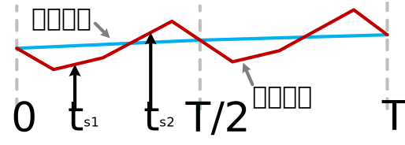

高精度单电阻电流采样
创建于2021-3-27
变频器一般为三相输出，用来控制三相交流电机。变频器一般需要三相电流信号来实现电机控制，同时，也要根据三相电流信号实现对变频器和电机的保护。三相电流信号的获得方式有很多种，通过采样电阻获得电流信号，是常用的电流采样方式。根据采样电阻的个数，电流采样方法可以分为三电阻电流采样、两电阻电流采样和单电阻电流采样，其中单电阻电流采样的硬件成本最低。当对系统成本要求较高时，单电阻电流采样是一种比较好的选择。
为了避免采样信号中包含电流纹波，一般需要在电压零矢量处进行电流采样。单电阻电流采样采集的是母线电流，通过电流重构的方法获得三相电流，由于单电阻电流采样时，对电流采样窗口和采样时刻有一定要求，无法做到在电压零矢量处采样电流，这就导致一般单电阻电流采样方法采到的电流中包含电流纹波信号，从而使采样到的电流信号精度降低。下图为两次采样的示意图，采样时刻的电压矢量为非零电压矢量，因此采到的电流信号会受到纹波影响。

为了解决这个问题，特开发了一种高精度单电阻电流采样算法，通过对输出电压以及采样时刻的调整，可以降低单电阻电流采样时纹波电流的影响，从而提高电流采样精度。